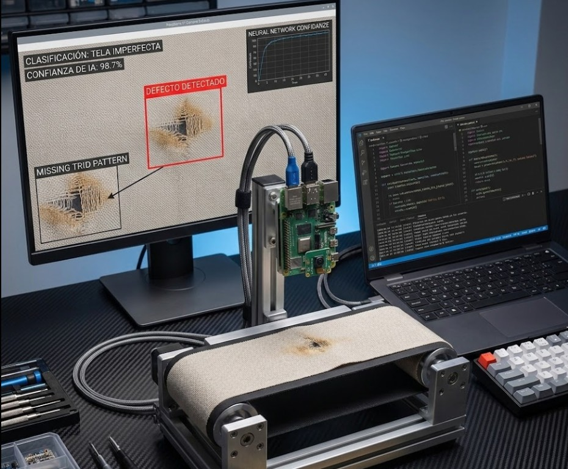

Aviónica y telemetría / Avanzado
Convierte las señales en información.
Sistemas de Telemetría Aeroespacial Avanzada

Sobre el programaComprende el sistema.
Construye con criterio.
Explora la arquitectura de aviónica, el registro de datos en MicroSD y la transmisión de información mediante radiofrecuencia LoRa.
Lo que aprenderás
- Comprender una arquitectura de adquisición de datos.
- Organizar el registro de mediciones en MicroSD.
- Integrar conceptos de transmisión de datos por LoRa.
Proyecto de aplicación
Arquitectura de un sistema de adquisición, almacenamiento y transmisión de datos de telemetría.
Contenido del programa
El programa contempla 7 módulos. Solicita el sílabo completo y el calendario de la próxima edición para conocer la distribución de sesiones.
Solicitar sílaboAntes de empezar
Recomendado para participantes con experiencia previa en microcontroladores y electrónica. Solicita el sílabo y los componentes requeridos para confirmar que el programa se adapta a tu nivel.
Preguntas frecuentesTodo listo
Todo listo
para empezar.
¿Necesito comprar componentes?
Los componentes dependen del proyecto y de lo que ya tengas. Solicita la lista y confirma qué materiales están incluidos antes de inscribirte.
¿Cómo accedo a las clases?
Después de coordinar tu matrícula, MECRO te proporciona las credenciales del aula virtual y la información de tu grupo.
¿Cómo se obtiene el certificado?
Solicita los criterios de evaluación, entrega del proyecto y emisión del certificado correspondientes a tu edición. El equipo confirma el cumplimiento de los requisitos.
¿Cuándo inicia la próxima edición?
Consulta las próximas fechas y horarios en admisiones antes de realizar tu pago.